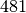
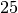
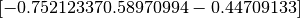
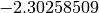
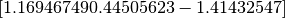
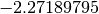
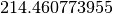

Boston Housing is a fairly standard dataset used for testing regression problems. It contains 506 data points with 12 numeric attributes, and one binary categorical attribute. The goal is to determine median home values, based on various census attributes. This dataset is available at the UCI Repository.
The demo follows that in [1]. The data set was preprocessed as follows: each continuous feature was transformed to zero mean and unit variance (The categorical variable was dropped). The data was partitioned into  points for training and  points for testing.
The mean function used was src.Core.means.meanZero() and the covariance (using the src.Core.kernels.covSum() function) was a composite of src.Core.kernels.covSEiso() and src.Core.kernels.covNoise(). The initial values of the hyperparameters were selected randomly from a zero-mean, unit-variance normal distribtion. The actual values were: . The initial likelihood hyperparameter was . The regression started with initial negative log marginal likelihood of :math:` 752.458276632`. Note the initial zero mean and the variance that is uniform over the test set.
After hyperparameter optimization, the covariance hyperparameters were  and the likelihood hyperparameter was . The final negative log marginal likelihood (optimized) was .
| [1] |
|
{kind=link}
{kind=link}